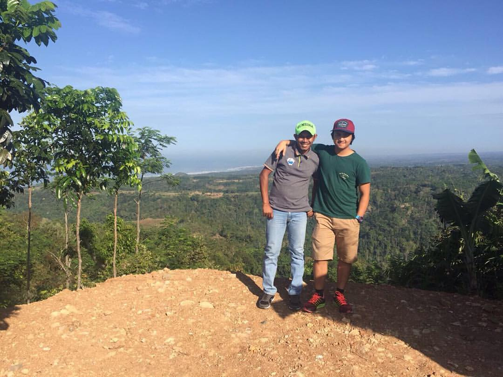
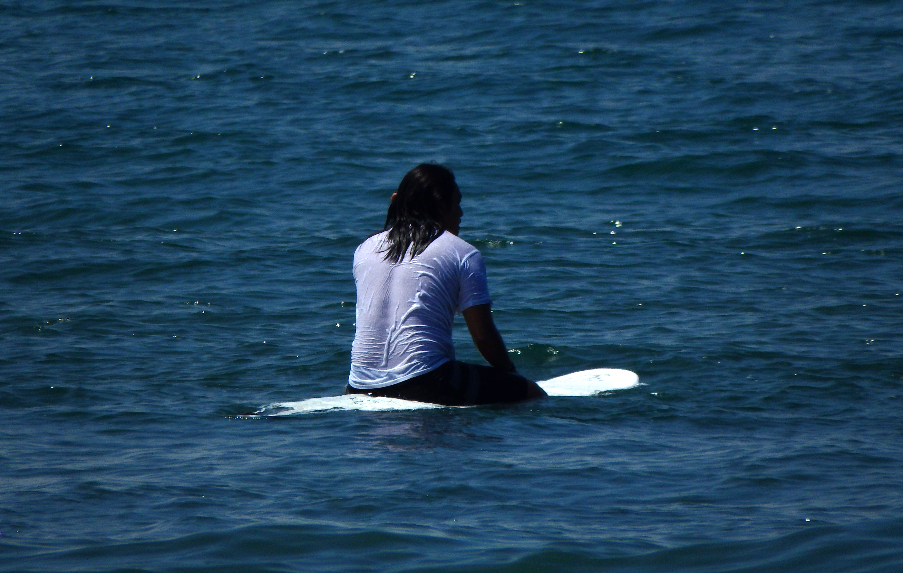
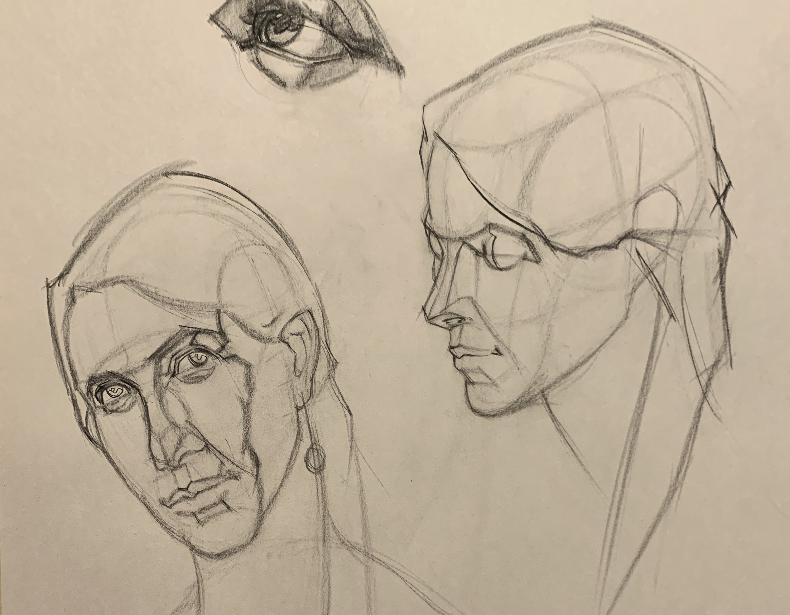

more about jersey
I was born in Jakarta and was raised there for fifteen years, until which then I've moved to Singapore and Canada. Having been moving around a lot since that age, I learned quite a bit of social skills. I like to think of myself as a "people person", as the thing I love most about life is the connections that I make with people of various walks of life. Most of my friends are scattered around the world, and have varying nationalities and backgrounds. I love the intricate cultural differences and the vast similarities that we have. I always aspire to travel more in the future to make as much friends around the globe as I can for as long as I'm alive.
Growing up in the island nation of Indonesia, I was exposed to as much coastline as a person could be. Though I don't consider myself as sailor of a seaman, I'd like to think I have a special connection to the ocean, or just the water for the most part. The fondest of my childhood memories were surrounded around swimming in the ocean, body-rafting rivers, and of course, jumping off (small) water falls. Anything that has to do with the great outdoors, I'm a big fan of. I also believe that it's a great social event for coworkers, being outdoors can create conversational topics that are further from work.
Balance is an important thing, even when it comes to leisure. I'm not always out camping or hiking. Actually, more often then not, you can find me drawing or painting. The skillful trade of a master draughtsman is something that I always aspire to be. Human beings had always been illustrating, this is aparent in the cave paintings we see today. I enjoy honing my illustration skill, I've actually done an online enrollment in Watts Atelier of the Arts, where I plan on continuing. I believe being an artist teaches discipline, appreciation for observation, and understanding the importance of critical thinking and taking your time in devicing a solution to a problem.